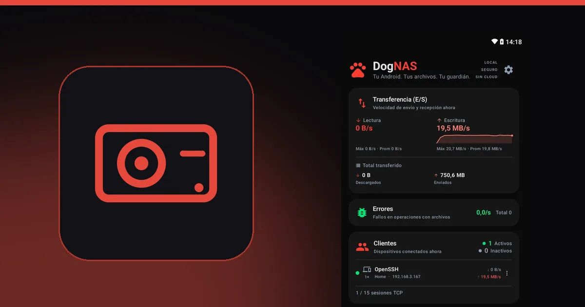

Cómo reutilizar el disco de una laptop vieja como almacenamiento de la casa

Cuando cambias el disco duro de una laptop por un SSD, el disco viejo suele ir al cajón. Todavía funciona y puede tener cientos de gigabytes. Con una caja USB y un Android que sirva de servidor, ese disco gana una nueva función: espacio extra para las fotos, los videos y los documentos de la casa.

Qué necesitas
- Un disco duro o SSD de laptop que aún funcione. Antes de usarlo, copia a otro lugar lo que todavía tenga.
- Una caja o dock USB compatible con el formato del disco.
- Un celular o tablet Android con USB OTG, que es lo que permite conectar discos USB al dispositivo, y el cable o adaptador correcto.
- DogNAS instalado en ese Android, que será el servidor.
Paso a paso
- Coloca el disco en la caja USB y confirma que aparece normalmente.
- Conecta la caja al Android con el cable OTG.
- En DogNAS, elige el disco USB como el lugar donde se guardarán los archivos y toca Iniciar.
- Crea los perfiles y conecta los demás dispositivos con código QR y PIN.
A partir de ahí, el disco es el almacenamiento de tu servidor, al que se accede por el Wi-Fi de casa.
Precauciones importantes
- Energía. Los discos duros mecánicos pueden pedir más energía de la que da un celular. Si el disco no arranca o se desconecta, usa un hub USB con fuente propia. Los SSD suelen gastar menos.
- Compatibilidad. El resultado depende del dispositivo, de la caja y del disco. Pruébalo antes de depender de él.
- Un disco, sin redundancia. DogNAS no junta varios discos en un único volumen y no hace copias por su cuenta. Un disco puede fallar, y un disco viejo, más aún. Mantén una copia independiente de lo importante.
- Espacio. En el plan Gratis, DogNAS administra hasta 64 GB, aunque el disco sea mayor. Pro, una compra única y sin suscripción, usa todo el disco.
¿Vale la pena?
Si ya tienes el disco y la caja, el costo es casi cero, y el resultado es un servidor con bastante espacio para la familia. Si fueras a comprar todo desde cero, compara con un NAS o con un SSD externo, y mira NAS tradicional o servidor Android para decidir.
Para armar el servidor, empieza por cómo convertir un Android viejo en un servidor de archivos.